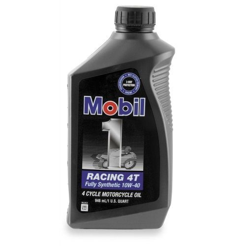

There are four main kinds of part. Each has good and bad points. Take the old part, the model and the year to the shop.
The four kinds
- OEM (original equipment): made by or for the bike maker. It fits exactly and costs the most. Start here if price is not the problem.
- NOS (new old stock): an original part that has been in storage. Steel parts keep well. Rubber parts age, so check seals, tyres and hoses of old stock.
- Aftermarket: made by someone else. Common parts such as filters, pistons and valves are often as good as the original and cost less. Fit is usually fine, but check.
- Used: taken from another bike. Often half the price. It is a good choice if the part is not worn out or if no new one exists.
Steps
- Write down the make, model, year and engine number. Keep the old part to compare.
- Look for the part from the maker first. Ask a local dealer.
- If it is too dear, try aftermarket brands. Ask other owners of your model which work.
- For old bikes, try old-stock sellers, online shops and scrapyards.
- Check size and shape against the old part before you pay.
- Ask about returns. A seller decides how a warranty is handled, and electrical parts often have no warranty.
- Buy from the shop that gives you advice. It needs the sales to stay open.
Bikes from small or new makers
- Many imported bikes sell parts as complete assemblies (whole carburettor, clutch or magneto) which also fit other makes. Check the shape before you buy.
- Piston and ring sets may come only as a set with the cylinder. Oversize pistons may not exist.
- Ring sets may have no marks. Check Fit piston rings.
- Manuals may not exist. Use general specifications from a similar engine and measure parts.
- Find the same part number used by a major make if you can.
Check your work
- The new part matches the old part in size, shape and fittings.
If it did not fix the problem
- No supplier found: Parts for the bike are not available.